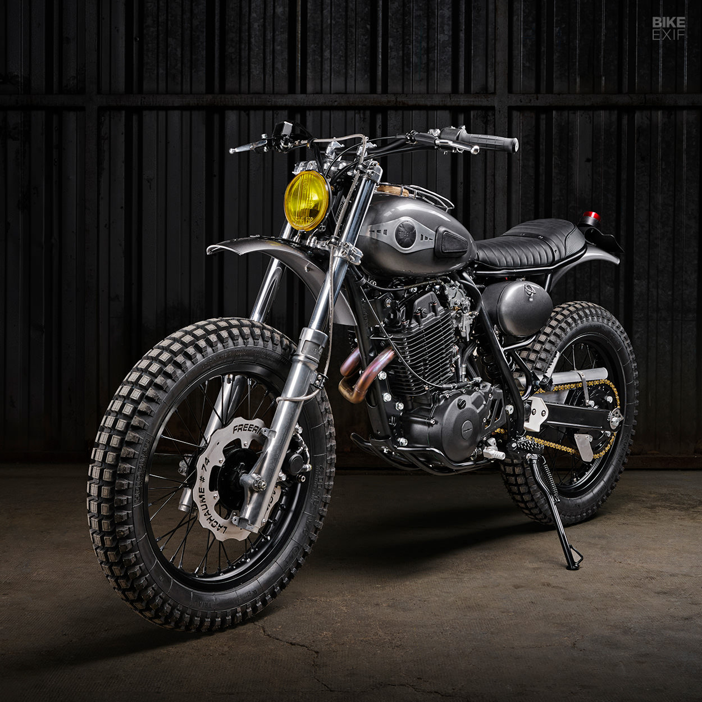
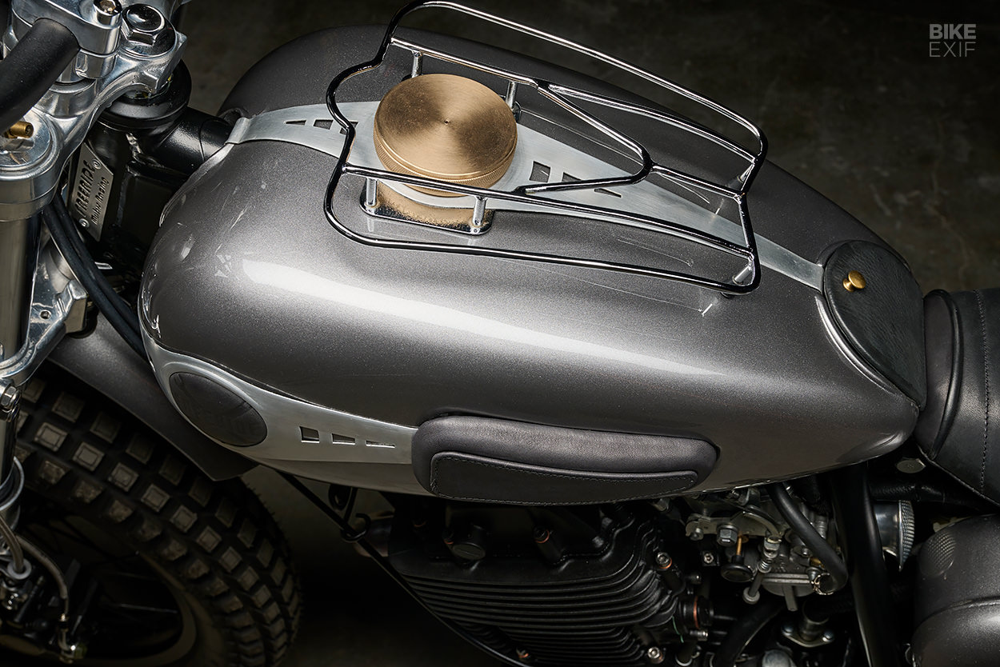

Interested in buying a new bike and overwhelmed by all the options? We are here to help! Fill out our quick find the right bike survey and our team of trusted bike advisors will send you a shortlist of bikes that fit your needs, desires, and budget.
PLEASE NOTE : The COVID-19 pandemic has resulted in monumental demand for bicycles. World-wide inventory has been diminished beyond comprehension. Selection and choice are still extremely limited until the 2022’s begin to arrive… most of which will not be available until the latter half of the season. In the meantime, your patience and understanding is greatly appreciated.
THE SHEER DIVERSITY of Freeride Motos Racing’s stable makes it difficult to lump them into one silo. You’re just as likely to find a svelte supermoto in their workshop, as you are a 90-year-old Moto Guzzi. Shop boss Pierre Dhers is clearly onto a good thing—so it’s no wonder that he gets return customers. One such customer is Dakar Rally driver and flat track racer Pierre Lachaume. The two Pierres met some time ago when Monsieur Lachaume wanted a custom bike. He wanted his 1989 Yamaha XT 600 modified at first, but, after some deliberation, Freeride built him a stunning KTM flat tracker instead.
Patience is a virtue that he clearly possesses. Once the KTM was done, he headed back to Freeride’s workshop to get the XT 600 sorted too. “After having completed other projects together, the subject of the XT came back on the table,” explains Pierre Dhers. “We wanted a simple and refined scrambler, a perfect way to get to the corner bar for a drink.”
If you were unaware, the French once had a booming national motorcycle trade, which pumped out some beautiful machinery (give it a Google). Freeride took inspiration from post-war French motorcycles, by fitting the fuel tank from a 1950s Monet Goyon. The oil tank and toolbox were lifted from a 125 cc Terrot. The brass fuel and oil tank caps were hand-turned by Pierre’s father. who regularly contributes to Freeride projects. The brushed aluminum accents on the tank and the small luggage rack are period parts that were restored for the project.